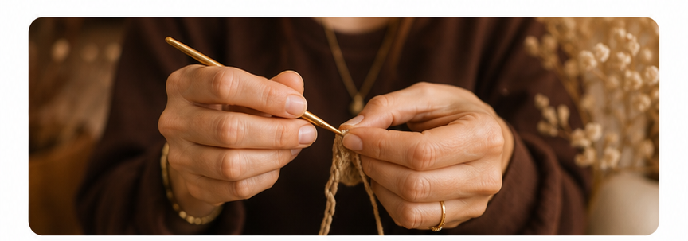
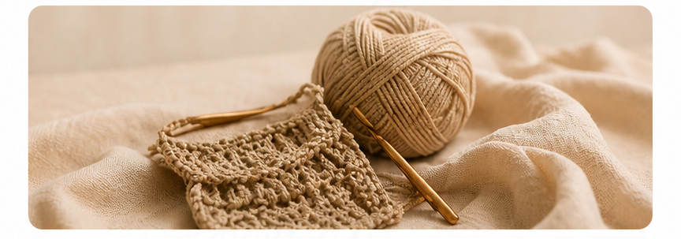
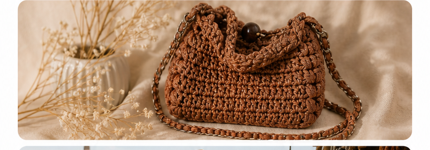
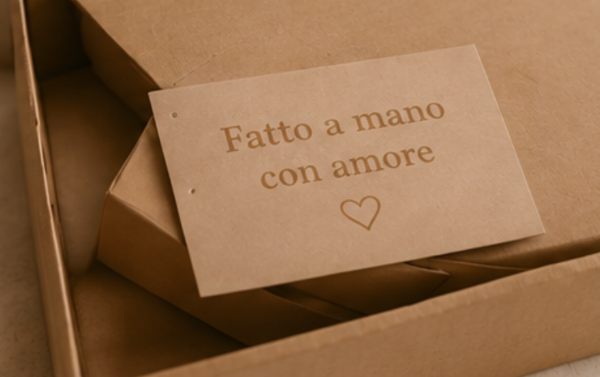
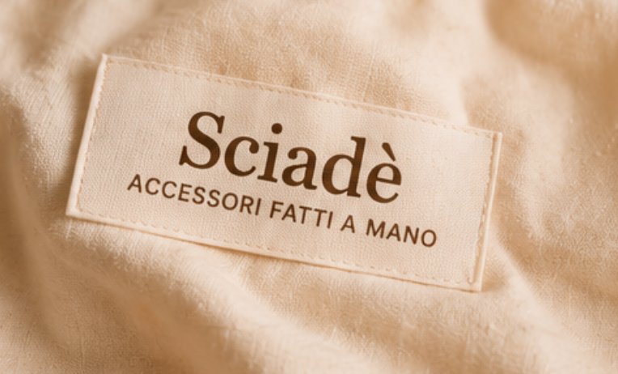

I primi insegnamenti
Da bambina, Francesca impara l'arte dell'uncinetto dalla nonna, ricevendo pazienza, tecnica e amore per i dettagli.

Piccoli pezzi, fatti a mano
Ogni borsa e accessorio nasce dall'incontro tra tradizione, creatività e materiali selezionati con attenzione. Pezzi unici, pensati per accompagnarti ogni giorno con eleganza e personalità.
Chi siamo
Ci sono passioni che nascono da bambine e, anche se per un po' si mettono da parte, trovano sempre il modo di tornare. Questa è la storia di Francesca Tolloni e del suo legame indissolubile con l'uncinetto.
Un viaggio fatto di fili, esperienze, incontri e tanta dedizione, che oggi prende forma in creazioni uniche, fatte a mano con amore e attenzione.
Da bambina, Francesca impara l'arte dell'uncinetto dalla nonna, ricevendo pazienza, tecnica e amore per i dettagli.

Riprende in mano l'uncinetto come spazio personale in cui ritrovare creatività, calma e serenità.

Le sue borse iniziano ad accompagnare le persone più care: ogni regalo diventa un gesto unico e personale.

La passione diventa un progetto più grande: le creazioni iniziano a essere condivise e vendute.

Nasce Sciadè: un brand che racconta cura, identità e amore per ciò che è fatto a mano.

Collezione
Contatti
Per disponibilità, pezzi su misura, ritiro o dettagli di consegna, contatta direttamente Sciadè.
Hai un'idea particolare?
Oltre alle collezioni disponibili, è possibile richiedere creazioni personalizzate. Colori, dimensioni, dettagli e finiture possono essere adattati alle tue esigenze per realizzare un accessorio che rispecchi pienamente il tuo stile.
Ogni progetto nasce dal dialogo con il cliente e viene sviluppato con la stessa attenzione dedicata a tutte le altre creazioni.